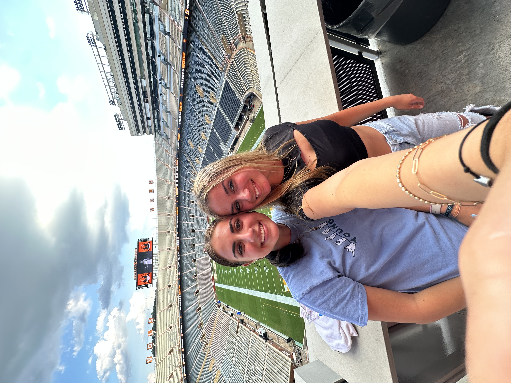

Hey! I Miss You!

My sibling, dear, so far away,
I miss your smile, your laughter, every day.
The moments we shared, a treasure in my soul,
Together we were, making each day whole.
But now, the distance stretches wide,
Though miles may separate, our bond remains,
In my heart, your memory forever reigns.
Until the day we reunite, I'll persist,
Missing you, my sibling, my heartache and my bliss.
Hey Ella! I miss you so much.
Here is a moment to express just how much I miss you. It feels like an eternity since we last spent time together, sharing laughter, secrets, and all those little moments that make our bond so special. Your absence in my daily life has left a void that cannot be filled by anyone else. I miss our late-night talks, our impromptu adventures, and your infectious laughter that always brightens up the room. Though distance keeps us apart, please know that my love for you grows stronger with each passing day, and I eagerly await the day we can reunite and create more cherished memories together. Until then, take good care of yourself, my dear sister, and remember that you are always in my thoughts and heart.